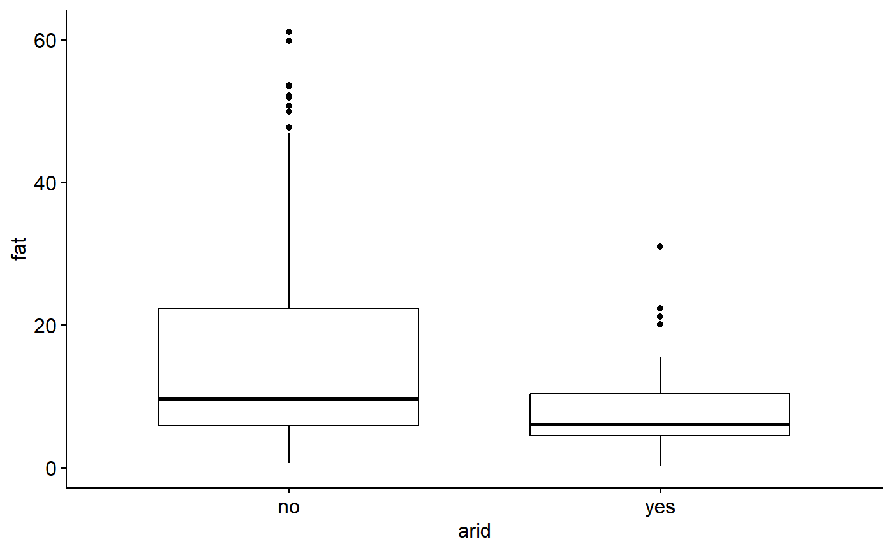

Appendix-7-Robustness_check.RmdThe results of analyses can frequently depend at least to some extent on the exact format of the data and analyses performed. Outlier removal and transformation frequently change p-values, as can running one type of test versus another, such as a Welch’s test versus a standard t-test on log-transformed data.
Manipulating your data to yield the results you want or picking an analysis the gives you the lowest p-value is a form of p-hacking. The flip size of p-hacking are sensitivity analyses and robustness checks. The most common type of sensitivty analysis is to report the results of an analysis with and without outliers or influential points to demonstrate that the results are not changed substantially by any changes. You can similarly report the results of multiple similar models, subsets of the data, etc to demonstrate the the results are not sensitivty to the details (or conversly are robust to these changes).
The term robustness check comes from economics and is fairly common there. As I understand it, stats-intentive economics papers frequently include presentation of alternative modeling approachs to demonstate that the main results are robust to the finer points of the modeling. As far as I know most other fields, including biology, do not use these terms nor regularly report on robustness; the only exception might be for outliers, and it seems usually this is just done informally using a parenthetical statement along the lines “results were qualitatively similar after removal of outliers” or something like that.
I personally think sensitivity/robustness should be emphasized more while both reporting analyses and also learnign stats. It can be very surpising how much p-values can changed depending on what exactly you do - and it can be comforting to see how things don’t change despite any monkeying with your model.
In 2018 I would like students whose primary analysis is just a t-test to perform at least one alternative analysis to examine the robustness of their results. This should be done in a seperate appendix so its obvious to me where its done. You can chose to compare
These different approaches are demonstrated below. For your project you just need to write functioning annotated code to carry out the tasks.
(Aside: sensitivty analyses are common in x-ray crystalography (Googins, pesonal communication); I have seen them used in phylogenetic analysses)
library(ggpubr) # plotting using ggplto2
library(cowplot)
library(bbmle)
library(nlme)
library(here)
library(stringi)
library(stringr)file. <- "Appendix-2-Analysis-Data_mammalsmilkRA.csv"
path. <- here("/inst/extdata/",file.)
milk <- read.csv(path., skip = 3)
genus_spp_subspp_mat <- milk$spp %>% str_split_fixed(" ", n = 3)
milk$genus <- genus_spp_subspp_mat[,1]Set log
milk$fat.log <- log(milk$fat)Data is non-normal and variacnes not equal between arid-dwelling and non-arid aniamls
ggpubr::ggboxplot(data = milk,
y = "fat",
x = "arid")
The difference is significant judging by confidence interval coverage, but we know p-values are sensitive to heterogenity of variacnes.
ggpubr::ggerrorplot(data = milk,
y = "fat",
x = "arid",
desc_stat = "mean_ci")Select the rows of data we want
i.no <- which(milk$arid == "no")
i.yes <- which(milk$arid == "yes")
i.use <- c(i.no, i.yes)A regular t-test with no correction for heterogenous variances. Not recommended; just for comparison.
t.test(fat ~ arid,
data = milk[i.use,],
var.equal = TRUE)
#>
#> Two Sample t-test
#>
#> data: fat by arid
#> t = 3.0493, df = 128, p-value = 0.002788
#> alternative hypothesis: true difference in means is not equal to 0
#> 95 percent confidence interval:
#> 2.825493 13.269013
#> sample estimates:
#> mean in group no mean in group yes
#> 16.401099 8.353846The default t-test
t.test(fat ~ arid,
data = milk[i.use,])
#>
#> Welch Two Sample t-test
#>
#> data: fat by arid
#> t = 4.0816, df = 127.95, p-value = 7.826e-05
#> alternative hypothesis: true difference in means is not equal to 0
#> 95 percent confidence interval:
#> 4.146069 11.948437
#> sample estimates:
#> mean in group no mean in group yes
#> 16.401099 8.353846Log transformation typically improves normality and equalizes variances.
t.test(log(fat) ~ arid,
data = milk[i.use,],
var.equal = TRUE)
#>
#> Two Sample t-test
#>
#> data: log(fat) by arid
#> t = 2.6293, df = 128, p-value = 0.009605
#> alternative hypothesis: true difference in means is not equal to 0
#> 95 percent confidence interval:
#> 0.1280392 0.9068536
#> sample estimates:
#> mean in group no mean in group yes
#> 2.313444 1.795998Welch’s test deals with variance, and log can perhaps help with normality.
t.test(log(fat) ~ arid,
data = milk[i.use,])
#>
#> Welch Two Sample t-test
#>
#> data: log(fat) by arid
#> t = 2.7734, df = 81.614, p-value = 0.006872
#> alternative hypothesis: true difference in means is not equal to 0
#> 95 percent confidence interval:
#> 0.1462655 0.8886273
#> sample estimates:
#> mean in group no mean in group yes
#> 2.313444 1.795998When faced with non-normality the default approach was to use a non-parametric rank-based method. This has less power to detect differences because it throws away information
wilcox.test(fat ~ arid,
data = milk[i.use,])
#>
#> Wilcoxon rank sum test with continuity correction
#>
#> data: fat by arid
#> W = 2294, p-value = 0.008367
#> alternative hypothesis: true location shift is not equal to 0Should be same as equal variance t-test
m.lm <- lm(fat ~ arid,
data = milk[i.use,])
coef(summary(m.lm))
#> Estimate Std. Error t value Pr(>|t|)
#> (Intercept) 16.401099 1.445453 11.346684 4.437894e-21
#> aridyes -8.047253 2.639024 -3.049329 2.787795e-03The gls() function in the nlme package allows you to directly model heterogenity in variances. Instead of
You can incorporate the observed variances into the model. NOte the line
This is a function varIdent(), which has a form inside it (“form”) that says “allow the variance to be different between the two arid and non-arid groups”
m.gls.var <- gls(fat ~ arid,
data = milk[i.use,],
weights = varIdent(form = ~1 | arid))
coef(summary(m.gls.var))
#> Value Std.Error t-value p-value
#> (Intercept) 16.401099 1.664086 9.855923 2.139350e-17
#> aridyes -8.047253 1.971611 -4.081563 7.823907e-05Removing the varIdent bit will give you the same results as lm()
m.gls.no.var <- nlme::gls(fat ~ arid,
data = milk[i.use,])We can compare the fit of these models using AIC. dAIC is >28, indicating that the model which incorporates heterogenous variance is much better.
AICtab(m.gls.var,
m.gls.no.var)
#> dAIC df
#> m.gls.var 0.0 4
#> m.gls.no.var 28.6 3The data set has reponse (x) variables of fat, protein, sugar, and total energy. What if we did t-test on all of these?
p.fat <- t.test(fat ~ arid,
data = milk[i.use,])$p.value
p.protein <- t.test(prot ~ arid,
data = milk[i.use,])$p.value
p.sugar <- t.test(sugar ~ arid,
data = milk[i.use,])$p.value
p.energy <- t.test(energy ~ arid,
data = milk[i.use,])$p.valueThese p-values vary a lot
p.fat
#> [1] 7.825563e-05
p.protein
#> [1] 0.322755
p.sugar
#> [1] 0.1491977
p.energy
#> [1] 0.01841994The arguement could be made that you should correct for multiple comparions (I wouldn’t necessarily argue for it myself). Things like Tukey’s-HSD correct for the family-wise error rate for related hypothesis tests within the same model. If we wanted to correct our five p-values above we’d we doing more of an experiment-wise error correction, though the application of these terms might vary.
Regardless of what you call it, you want to correct p-values originating from different models. You can do this using p.adjust()
the.ps <- c(p.fat,p.protein,p.sugar,p.energy)A Bonfoerroni correction is a conservation approach which actually has too stiff of a penalty; it leaves jsut on value “significant” (but 0.074 is pretty close)
p.adjust(the.ps,method = "bonferroni")
#> [1] 0.0003130225 1.0000000000 0.5967906641 0.0736797528the Holm method is Rs default for p.adjust and other functions which use p.adjust. It is less conservative than Bonferronni and does a better job of keeping alpha at the desired level. THe math is similar to Bonferonni but has some extra steps so I think many people use Bonf instead if they are doing calculations by hand.
The Holm method moves the last p-value in the list closer to 0.05 (of course, you shouldn’t get hung up on 0.05, but many people do.)
p.adjust(the.ps,method = "holm")
#> [1] 0.0003130225 0.3227550261 0.2983953320 0.0552598146The false discovery rate is becoming popular in some fields. It takes a different goal for what frequency of errors to let occur and is generally less stringent the Bonferroni, Holm, and related methods The last p-value is now 0.037. (Again, a little above 0.05 and a little below 0.05 shouldn’t be treated definitely as anythign)
p.adjust(the.ps,method = "fdr")
#> [1] 0.0003130225 0.3227550261 0.1989302214 0.0368398764